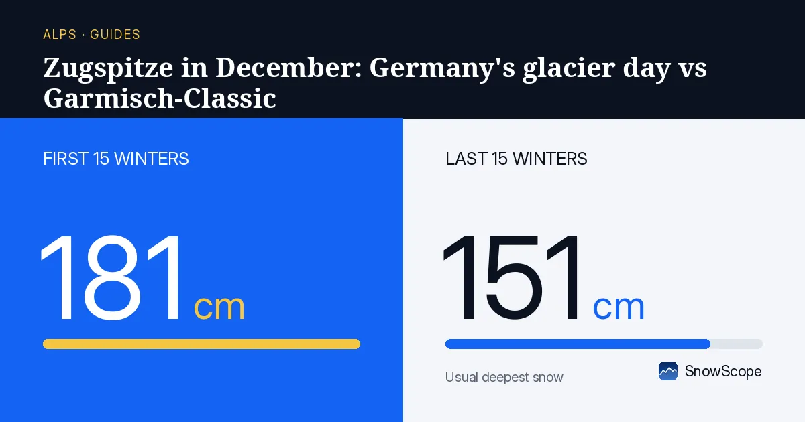

Zugspitze فدجنبر: نهار الكلاسيي فألمانيا مقابل Garmisch-Classic
جوج محطات فمدينة وحدة. فالتاريخ ديالنا ديال 46 شتوة، الهضبة ديال الكلاسيي ف Zugspitze فيها 122 سم نهار 15 دجنبر عادي ف 2627 م، والفوق ديال Garmisch-Classic ف 2047 م فيه 57 سم. والسكيباس ديال النهار تقريبا بنفس الثمن: 70,50 EUR و 69 EUR أونلاين.
شوف توقعات التلج مباشرة ديال Zugspitze فالتطبيق ديال SnowScopeالعلو ديال التلج، التنبيهات والخريطة 3D، فابور.
جوج محطات، دجنبر واحد
Garmisch-Partenkirchen كتعطيك اختيار نادر. لفوق Zugspitze، الكلاسيي الوحيد ديال السكي فألمانيا، كتطلع ليه بالتيليفيريك ولا بالتران؛ المنطقة المرسومة كتبدا من المحطة ديال الواد ف 995 م والبيستات فوق الهضبة تحت الفوق ديال 2627 م. لتحت Garmisch-Classic: 38 كم ديال البيستات من 727 م حتى ل 2047 م.
فدجنبر السؤال ساهل: تخلص تقريبا نفس الفلوس على تلج مضمون لفوق، ولا على بيستات كثر وتلج رقيق؟


التلج فنفس التواريخ
فالفوق ديال Zugspitze، كل الشتوات كان فيهم 30 سم ولا كثر فسيمانة 15 حتى 21 دجنبر، و 96 % كان فيهم 60 سم ولا كثر فسيمانة نوال. حتى عام ضعيف (واحد من 10) فيه 62 سم لفوق نهار 15 دجنبر. الشتوة اللي فاتت: 80 سم.
Garmisch-Classic مخلطة كثر. الفوق ديالها كان فيه 30 سم فهاديك السيمانة ف 89 % من الشتوات، الوسط (1387 م) غير ف 48 %، والتحت (727 م) تقريبا عمرو: نهار 15 دجنبر عادي فيه 6 سم. المحطة ديال الواد ديال Zugspitze حتى هي 12 سم؛ حتى واحد ما كيهبط ليها بالسكي فدجنبر.
الثمن فالگيشي
حسب اللائحة الرسمية ديال 2026-27، النهار للكبار ب 70,50 EUR أونلاين ف Zugspitze مع الطلعة، و 69 EUR أونلاين ف Garmisch-Classic. والصفحة الرسمية كتقول بلي فالگيشي أغلى من أونلاين. وحتى وحدة ما كتبيع سكيباس ديال 6 أيام فهاد اللائحة.
يعني القيمة هنا فدجنبر فالنهار، ماشي فالسيمانة: شري أونلاين، ختار المحطة على حساب التلج، وخلي الجوج اختيارات مفتوحين.
الاختيار لكل متزلج
المبتدئين والعائلات: الهضبة ديال Zugspitze، بيستات ساهلة وأحسن تلج فدجنبر فألمانيا، إلا كان الجو صافي. اللي كيعرفو مزيان: التيليسييجات اللي لفوق ف Garmisch-Classic من نهار يتعمر الوسط، غالبا من آخر دجنبر. للجميع: نهار العاصفة الهضبة تقدر تسد ولا تكون باردة بزاف، تبع التوقعات وخلي المحطة اللي لتحت كحل تاني.
نصايح للي كيتزلجو
- شري النهار أونلاين: حسب اللائحة الرسمية أرخص من الگيشي.
- فدجنبر تزلج فالهضبة ديال Zugspitze وهبط بالتيليفيريك ولا بالتران؛ الواد نادرا ما كيكون بيض.
- Garmisch-Classic قبل نوال: بقى فالتيليسييجات اللي لفوق؛ الوسط كان فيه 30 سم فنص دجنبر غير فشي نص ديال الشتوات.
- خارج البيست ف Zugspitze أرض ديال كلاسيي: قرا أولا النشرة ديال الانهيارات ديال Bayern.
خرائط أخرى (مواقع خارجية)
المراجع والمصادر
- Zugspitze: official lift-pass prices (2026-27), checked 13 November 2026 zugspitze.de/prices
- Garmisch-Classic: official lift-pass prices (2026-27), checked 13 November 2026 zugspitze.de/prices
على هاد الأرقام
الأرقام ديال التلج: التاريخ ديال التلج ديال SnowScope، 46 شتوة اللي فاتت (1980-81 حتى ل 2025-26) فالعلوات ديال المحطة، مصحح بالعلو (تقدير لمنطقة، ماشي البلاغات ديال المحطة)؛ «تلج مزيان» = 30 سم ولا كثر فالأرض فالمعدل ديال السيمانة. الخريطة: العلو العادي ديال التلج نهار 15 دجنبر موزع على التضاريس حسب العلو. البيستات والتيليسييجات: OpenSkiMap. الأثمنة ديال السكيباس: اللوائح الرسمية ديال المحطات، متشافة نهار 13 نونبر 2026؛ الأثمنة تقدر تتبدل.
النشرات الرسمية ديال الانهيارات: Lawinenwarndienst Bayern
كيفاش تستاشهد بهاد المقال
للبحث، التعليم ولا الصحافة: الأرقام والرسومات تقدر تعاود تخدم بيهم بحرية تحت CC BY 4.0 مع هاد الاستشهاد.
SnowScope (2026), Zugspitze فدجنبر: نهار الكلاسيي فألمانيا مقابل Garmisch-Classic, https://snowscope.app/blog/ar/2026/11/zugspitze-december-skiing-germany-glacier-price.html, تشاف ف 2026-11-14
SnowScope (Atlas Labs). (2026, November 14). Zugspitze فدجنبر: نهار الكلاسيي فألمانيا مقابل Garmisch-Classic. SnowScope snow reports. https://snowscope.app/blog/ar/2026/11/zugspitze-december-skiing-germany-glacier-price.html
BibTeX
@misc{snowscope2026zugspitzedecemberskiingg,
author = {{SnowScope (Atlas Labs)}},
title = {Zugspitze فدجنبر: نهار الكلاسيي فألمانيا مقابل Garmisch-Classic},
year = {2026},
month = nov,
howpublished = {\url{https://snowscope.app/blog/ar/2026/11/zugspitze-december-skiing-germany-glacier-price.html}},
note = {Published 2026-11-14 13:29 UTC; accessed 2026-11-14}
}· CC BY 4.0 · الطريقة، الداتا والأدوات →
Zugspitze: التلج والحرارة حسب العلو، هاد الشتا مقارنة مع اللي فاتت (الأدوات) →
تابع Zugspitze
فابور: ميساج ملي يجي التلج، والتوقعات كل صباح.